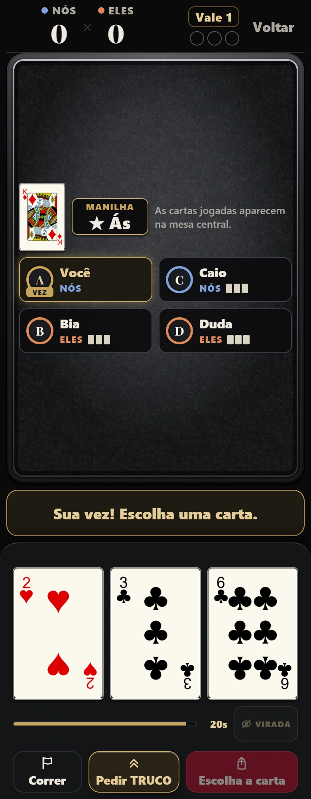
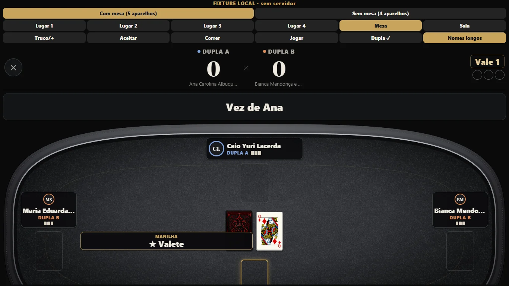
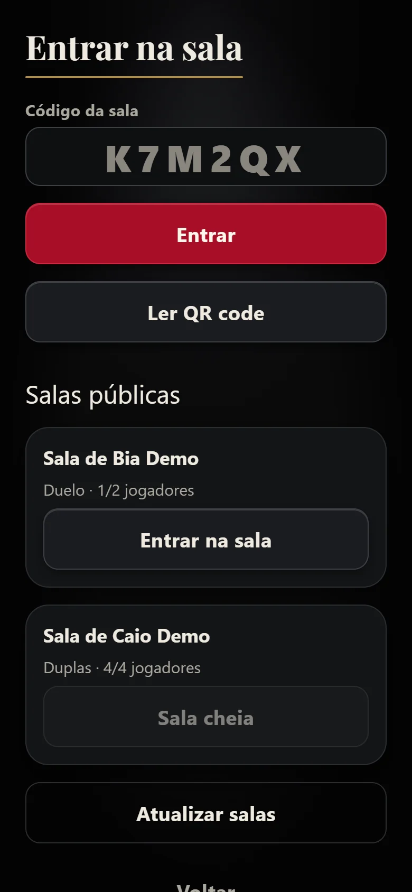
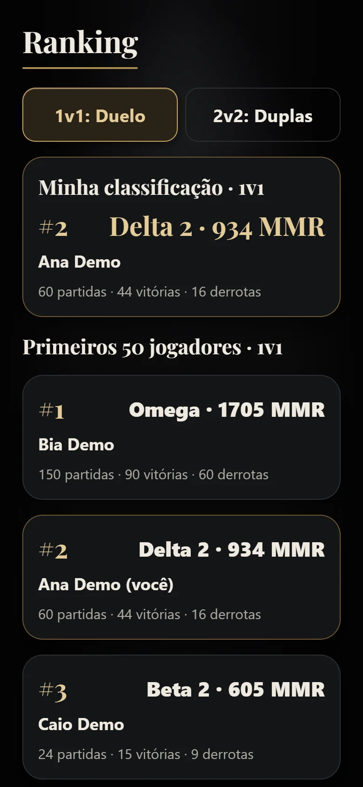
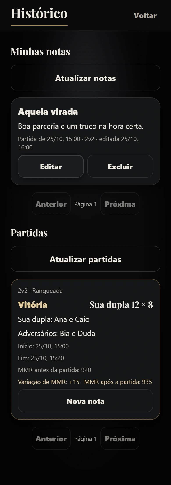

A próxima mão
é sua.
Truco Paulista no celular.
Os amigos continuam na mesma mesa.
Consultando versão para Android...
APK exclusivo para Android. No iPhone, jogue pelo navegador.
O truco é presencial.
O baralho é digital.
Duelo entre duas pessoas ou quatro amigos em duplas. Cada jogador guarda a própria mão no celular. A vira, as apostas e o placar ficam por conta do Decky.
Escolha a carta, peça truco e jogue de frente para quem está do outro lado da mesa.

Uma mesa
para todo mundo.
Um aparelho extra pode ficar no centro e mostrar só a mesa. As mãos continuam privadas nos celulares dos jogadores.
Vez, vira, manilhas e placar à vista. Até a carta descartada fica de costas.

Juntou o grupo?
Entre e jogue.
Compartilhe o código ou leia o QR da sala dentro do app. Salas públicas também aparecem na lista de entrada. Prefere só os amigos? Crie uma sala privada.
Todos os aparelhos precisam de internet.

Cada partida
conta uma história.
Comece em Beta 1 com 500 MMR e acompanhe seu Elo até Omega. Duelo e Duplas têm rankings independentes.
No histórico, reveja o resultado e a variação de MMR. Registre suas notas para lembrar daquela partida.


Feito para jogar junto.
Decky nasceu no projeto de Desenvolvimento Mobile do SENAI. Um baralho digital para partidas presenciais de Truco Paulista.
Quem fez o Decky
Mariana Ribeiro, Isabela Puzenato, Nicoly Ribeiro, Caio Yuri, Eduardo Zanetti e Rafael Brecci.